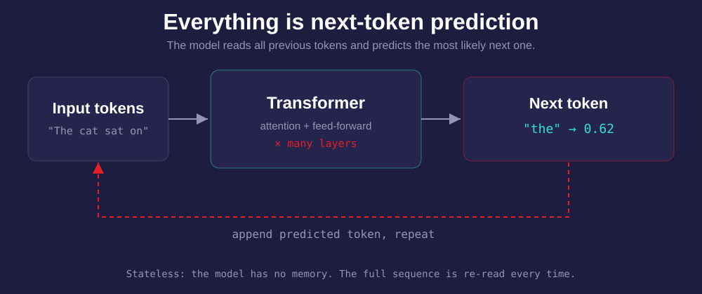
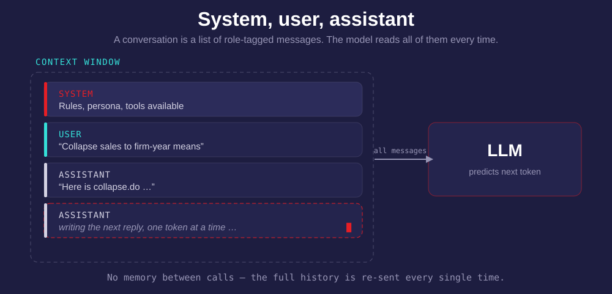
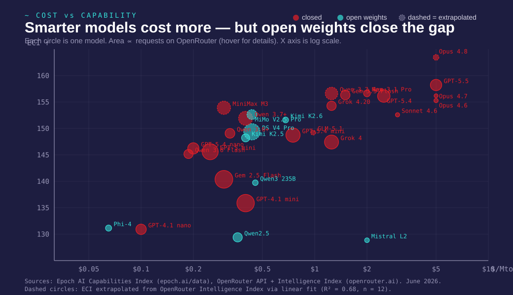
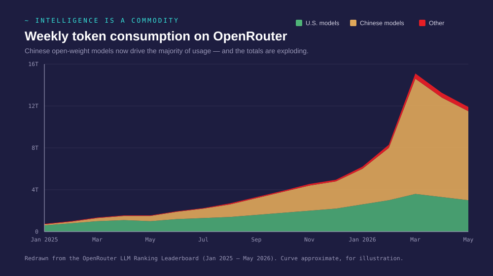
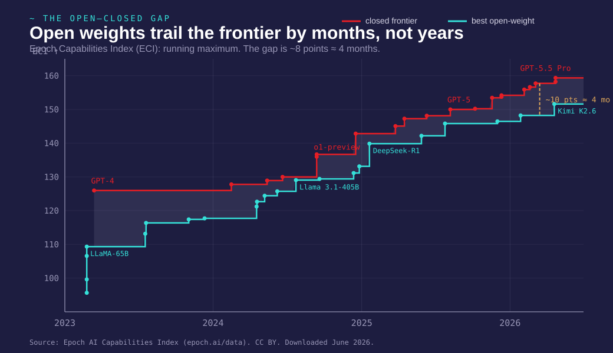

Agentic AI for Researchers
A one-day workshop for economists & social scientists
June 11, 2026
The arc of the day
three claims
Three claims
- Intelligence is becoming a commodity — understand the stack, then pick tools instead of brands.
- Agents work only on top of good structure — Day-1 practices are the prerequisite.
- Agents create a new reproducibility risk — pin models, save prompts, and review carefully.
Act 1
01 · How LLMs actually work
Everything is a chat completion
01a · The technical core without the hype
A model is a next-token predictor

Text enters the model as tokens
- The model never sees raw text — only tokens
- A token is roughly three-quarters of a word: "economics" →
["econ", "omics"] - The vocabulary is fixed and learned from data
- Each token is an integer:
"econ" → 42317,"omics" → 7891
Code, math, and prose all enter the model in these pieces.
Tokens become vectors
- Each token is mapped to a vector in $\mathbb{R}^d$ (typically $d = 4096$)
- Similar meanings → nearby vectors (cosine similarity)
- "king" − "man" + "woman" ≈ "queen" — linear algebra on meaning
- The model's "knowledge" lives in these vectors and the matrices that transform them
A 70 billion parameter model is just 70 billion numbers defining these transformations.
Training is fixed cost; inference is marginal cost
| Stage | What happens | Cost structure |
|---|---|---|
| Training | Learn language from trillions of tokens | Fixed cost: $10M–1B+, paid once |
| Fine-tuning | Adapt to a domain or task with curated data | Fixed cost: $100–100K, paid per adaptation |
| Quantization | Round the vectors to use less memory | Fixed cost: minutes of compute, trades precision for size |
| Inference | Generate tokens from a prompt | Variable cost: pay per token, every call |
Training is the sunk cost
- Pre-training on internet-scale text: books, code, papers, web
- Produces general-purpose "foundation" weights
- GPT-4 class: estimated \$100M+; Llama 3: ~\$30M in compute
- You never pay this — it's amortized across all users
Think of it as R&D capex — you consume the output, not the process.
Most researchers do not need fine-tuning
- Supervised fine-tuning (SFT): train on (prompt, ideal response) pairs
- RLHF / DPO: align with human preferences — "be helpful, don't be harmful"
- LoRA: update only a small adapter (~1–5% of parameters), keep base frozen
Quantization makes local models practical
- Each of those 70 billion numbers is stored as a decimal (32 bits → 8 significant digits)
- Quantization rounds them to fewer digits (4 bits → ~1 significant digit)
- Memory drops 8×: a 70B model goes from ~280 GB to ~35 GB
- Quality loss is surprisingly small — like rounding coefficients to 2 decimal places
This is what makes it possible to run serious models on a laptop.
Inference is the marginal cost of intelligence
- Every API call = forward pass through the network = tokens in, tokens out
- Priced per million tokens: \$0.10 (cheap) to \$15 (frontier)
- Cost is falling ~10× per year at the same quality level
- Local inference: variable cost → zero after hardware purchase
The model has no memory across sessions
Context window = working memory
- The model sees only what is inside the context window
- Everything outside it is gone — no persistent memory
- The full transcript is re-sent on every API call
- Context filling causes failure — the fix is a fresh session, not more prompting
System, user, assistant

Attention decides what matters
- Each token attends to all previous tokens — decides which ones are relevant
- Like reading a paper: you don't weigh every sentence equally, you focus on what matters for the current paragraph
- Multiple attention heads in parallel — different heads notice different patterns
- This is why position in context matters — instructions at the top get more attention
Tool use is just structured output in a loop
Without tools
{
"role": "assistant",
"content": "The answer is 42."
}
With tools
{
"role": "assistant",
"tool_calls": [{
"name": "read_file",
"arguments": {"path": "data.csv"}
}]
}
The harness runs the tool, appends the result, and calls the model again.
Act 2
02 · The ecosystem — and working with agents
The ecosystem — and the unbundling argument
02a · Four separable layers
The stack has five separable layers
| Layer | What it is | Examples |
|---|---|---|
| Model | The neural network | GPT, Claude, Gemma, Qwen, DeepSeek |
| Harness | The program that runs the loop | OpenCode, Claude Code, Cursor, Zed |
| Tool | Built-in actions the harness provides | Read, Write, Bash, WebFetch |
| MCP | External tools plugged in at runtime | Filesystem, web search, database |
| Skill | Plain-text instructions in your repo | CLAUDE.md, domain skills |
Choosing a model: cost vs capability

Match the model to the task
| Task | Needs | Model tier |
|---|---|---|
| Reformat a table | Speed, low cost | Small |
| Write a Stata .do file | Accuracy, domain knowledge | Mid |
| Design a research pipeline | Reasoning, large context | Frontier |
| Review a 50-page paper | Long context window | Frontier, 128K+ |
Using Opus to reformat a CSV is like hiring a professor to do data entry.
Intelligence is commoditizing fast

The open–closed gap stays small

Consumer hardware already runs useful local models
| Hardware | VRAM / RAM | What fits | Approximate cost |
|---|---|---|---|
| MacBook Air M3 | 24 GB unified | 14B models (Qwen 2.5, Llama 3) | ~$1,800 |
| Mac Studio M4 Ultra | 192 GB unified | 70B+ models at full quality | ~$6,000 |
| Gaming PC + RTX 4090 | 24 GB VRAM | 14B models, 70B quantized (slow) | ~$2,500 |
Tools: Ollama, llama.cpp, LM Studio — all free.
Cloud vs local is a make-or-buy decision
Cloud API
- Low fixed cost (subscription or free tier)
- Positive marginal cost per token
- Always frontier quality
- Data leaves your machine
Local inference
- High fixed cost (hardware)
- Zero marginal cost
- Slightly lower quality (quantized)
- Data never leaves your machine
For restricted data (DUA, IRB), local may be the only compliant option.
The prescription
- Pick one harness you are comfortable in
- Swap models freely for each task
- Keep good structure in your work
- Your own skills matter more than ever
Lock-in is the risk; model loyalty is a mistake.
Harness, tools, and the model

The escape–enter loop in practice
02b · Live demo
Use natural language in, structured output out
Natural language in
You describe what you want in plain English. The agent interprets, plans, and acts.
Structured output out
Diffs, file edits, shell commands — all reviewable. You review diffs, not code.
Hit Escape when the session turns toxic
- The agent is going in the wrong direction
- It's making changes you didn't ask for
- Context is getting polluted with errors
- "Toxic context" — when a mistake poisons all subsequent reasoning
The fix: start a fresh session, not more prompting.
CLAUDE.md is project config for agents
- What goes in: data assumptions, naming rules, niche tools, what the agent should never do
- What does NOT belong: everything else — irrelevant instructions actively hurt
- Start with 3–5 rules. Add one each time you correct the agent twice.
Skills and project configuration
02c · Two kinds of plain text that make agents smarter
Skills are reusable task templates
- A skill = a markdown file with a fixed output location, commit convention, and stopping rules
- Domain-specific, not generic
- The agent reads the skill and follows it like a recipe
One giant instruction file makes the agent worse
❌ One giant file
- Context window fills up
- Conflicting instructions
- Agent ignores most of it
- Actively degrades performance
✅ Separated skills
- Each skill is focused
- Agent loads only what's needed
- Easy to test and iterate
- Reusable across projects
Strong opinions, loosely held
02d · How to actually choose your tools
You rarely need the frontier model
- The frontier is 100× more expensive than mid-tier — for ~10% better reasoning
- A fast, cheap, mid-capability model lets you iterate faster
- Your thinking time is now the bottleneck, not the model's — AI executes, you direct
- Waiting 60 seconds for a frontier model to think wastes your attention
Monthly subscriptions are not the long-run equilibrium
- Intelligence will be priced by the million token — like electricity, like bandwidth
- Subscriptions bundle a model, a harness, and a margin — you pay for all three
- Per-token pricing lets you swap models freely and pay only for what you use
- Pick a harness that lets you choose any model via API
Would you sign a contract with one electricity provider who also chose your appliances?
opencode > Claude Code
- Faster and more flexible — you can select any model from any provider
- Open source — you can read the harness, modify it, and decide how much to trust it
- The best harness is the one that gets out of your way
CLAUDE.md and skills are just words
- There is no special pool of "skills" — a skill is a sentence you write in plain language
- How would you tell a coworker what to do? Write that.
- CLAUDE.md: keep it very short, only for things truly specific to your project
- Better: just follow industry standards so even a cheap model understands you
Your workflow skills are the durable advantage
The more control you have over your own workflow — your shell, your editor, your data modeling, your version control — the better your experience with AI. Even for $0.
- AI amplifies what you already know how to do
- If you can't express a task clearly to a coworker, you can't express it to a model
- Knowing your tools (shell, Stata, your editor) means you can verify what the model produces
- Best practices are not overhead — they are what makes your project legible to an agent
Act 3
03 · Build a project from scratch
Empty folder to working project
03b · Live demo
Empty folder to working project
- Start from an empty folder
- Use bead to download the Anthropic Economic Index data
- Set up the project structure
- Use OpenCode to figure out how to run Stata from the command line
- Write the first prompts: load, explore, analyze
Watch what happens when the agent writes Python instead of Stata — and how your CLAUDE.md prevents it.
Closing
04 · What comes next
The durable investment
Day-1 structure was already right. Project config makes it agent-legible. Review makes it auditable. The models will keep getting cheaper; the structure is the durable investment.
Thank you
koren@codedthinking.com · the9x.ai/2026-06-11 · Recap